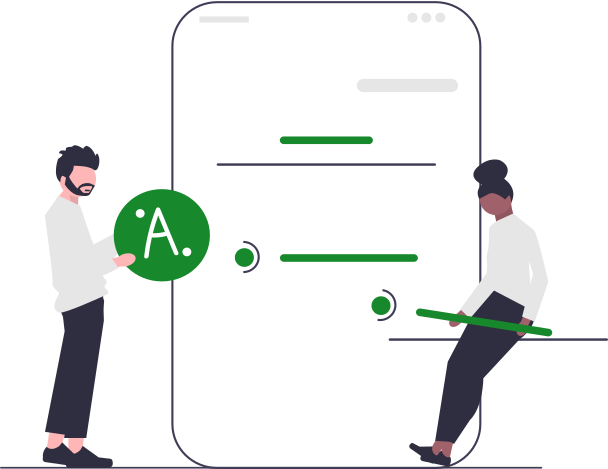

Objetivos do CSP


Realizar ações que visam a otimização do processo de ensino-aprendizagem.

tem como atribuição o assessoramento nas atividades de ensino, pesquisa e extensão através da assistência aos professores nos seguintes aspectos: formação continuada, legislação educacional, planejamento, diários de classe, relação professor-aluno e avaliação escolar, para assegurar a regularidade do desenvolvimento do processo educativo.

cuida do atendimento e do acompanhamento individual dos alunos em seus aspectos acadêmicos e da inter-relação do estudante com a instituição, professores e eventuais dificuldades pessoais que possam afetá-lo durante seu período de estudos.
tem a competência de assistir ao discente surdo em toda sua jornada acadêmica. Essa competência vai além da sala de aula, pois engloba palestras, seminários, workshops entre outros eventos dentro do IFSP. Na ausência desse público-alvo prioritário, o TILSP poderá atender solicitações realizadas por outros servidores e/ou docentes que necessitarem dos serviços de tradução e interpretação de materiais, vídeos, textos e aulas. Além destas incumbências, também pode dar suporte em outro campus ou mesmo na reitoria (principalmente neste contexto de pandemia, em que está em home office), assim como auxiliar nas diversas demandas da CSP.
realiza o acompanhamento dos alunos em vulnerabilidade, a verificação de situações que impedem o discente de frequentar as aulas, a realização de encaminhamentos aos serviços de saúde e/ou CRAS quando necessário. Cabe ao Serviço Social organizar os editais de acesso ao Programa de Auxílios Permanência (Alimentação, Creche, Material Didático, Moradia e Transporte), realizar a análise da situação socioeconômica dos alunos para ingresso no Programa, acompanhar os índices de frequência dos participantes, realizar as solicitações de pagamento dos auxílios gerindo os recursos financeiros em conjunto com a Direção Geral, buscando promover a melhora no desenvolvimento dos estudantes a partir de sua permanência no ambiente escolar.
objetivam atender toda a comunidade discente, independente de situação socioeconômica, por meio de auxílios que subsidiem: cultura, esporte, inclusão digital, acesso e aprendizagem de estudantes com necessidade educacionais específicas e apoio didático-pedagógico. Estas ações são estruturadas em projetos e direcionadas à formação integral do estudante e ao aprimoramento de valores de cidadania, participação, coletividade e inclusão social.
envolvem a avaliação do ambiente escolar, orientação e apoio para evitar ou reduzir problemas que comprometem o desempenho acadêmico discente, intervenção socioeducativa para a construção de um ambiente educacional positivo e integrador e o estímulo das habilidades socioemocionais.
constitui aconselhamento pontual de demandas psicoemocionais específicas de cada aluno, incluindo o aconselhamento familiar e a realização de encaminhamentos à rede de saúde sempre que necessário um tratamento específico, com objetivo de promover o bem-estar e desenvolvimento dos estudantes.
O NAPNE tem por finalidade desenvolver ações, programas, projetos que contribuam para a promoção da inclusão escolar de pessoas com necessidades educacionais específicas, buscando viabilizar as condições para o acesso, permanência e êxito, e na sua qualidade de vida com ética, respeito, cidadania e social.
| Servidor(a) | Segunda | Terça | Quarta | Quinta | Sexta |
|---|---|---|---|---|---|
| Adeline Maria Borges Branco Gomes | 9h às 15h | 9h às 15h | 9h às 15h | 17h às 21h | 9h às 15h |
| Ana Carolina Steffen Figueiredo | 10h50 às 16h50 | 10h50 às 16h50 | 13h30 ás 19h30 | 13h30 ás 19h30 | 13h30 ás 19h30 |
| Carmen Izaura Molina Correa | 13h às 22H - Intervalo das 17h às 18h | 13h às 22H - Intervalo das 17h às 18h | 09h às 18H - Intervalo das 13h às 14h | Teletrabalho | Teletrabalho |
| Daniela Galera Castilho | 15h às 21h | 13h as 19h | 15h às 21h | 9h às 15h | 15h às 21h |
| Flávia Campello | 9h as 15h | 11h as 17h | 9h as 13h | 9h às 15h | 9h as 15h |
| Michele Oliveira da Silva | 9h as 15h | 10h as 16h | 9h as 15h | 18h30 as 22h30 | 9h às 15h |